Charities
- Aboriginal Volunteer Program
- Against Malaria Foundation
- Amnesty International
- Asylum Seeker Resource Centre
- Australians Investing in Women
- Australian Muslim Women's Centre for Human Rights
- Centre for Policy Development
- Effective Altruism
- Fitzroy Stars
- Fred Hollows Foundation
- Girls at the Centre
- Give Directly
- Hands on Learning
- International Anti-Poaching Foundation
- Jawun & Empowered Communities
- Just Reinvest
- Médecins Sans Frontières (Doctors Without Borders)
- Melbourne Accelerator Program
- Murdoch Childrens Research Institute
- NetHope
- One Disease at a Time
- Oxfam
- Pathway Club
- Peru's Challenge
- Red Cross Red Crescent
- Refugee Career Jumpstart Project
- Refugee Legal Support
- Refugee Talent
- Refuge Point
- Regional Australia Institute
- Rotary Peru
- The Salvation Army
- Save the Children
- Scottish Love in Action
- Second Bite
- SEW (Supporting Empowering Women)
- Sikhala Sonke
- The Smith Family
- Social Ventures Australia
- Stateless Children Legal Clinic
- Talent Beyond Boundaries
- Thrive
- UNHCR
- Unicef
- University of Melbourne
- World Vision
- ygap
Aboriginal Volunteer Program

www.avi.org.au
www.volunteeringsa.org.au
The Aboriginal Volunteer Program was inspired by a related project described in the documentary Children of the Rainbow Serpent.
The program provides professional training and support to young Aboriginal volunteers who spend 10 weeks living in the remote Aboriginal community of Oodnadatta working to help achieve a number of goals set by the community.
The Aboriginal Volunteer Program is based on a successful international community-based youth-led volunteer program. For use in Australia, it was specifically designed to sit within a culturally-informed and respectful framework appropriate for Aboriginal communities and Aboriginal volunteers.
The program is delivered through a partnership between Volunteering SA&NT, AVI, the South Australian Aboriginal Reference Group and the community of Oodnadatta.
The results from this innovative pilot initiative have been very positive, both for the community involved and also for the volunteers themselves. We are proud to continue our support for the program into its next phase so that it “can continue to flourish in Oodnadatta as well as enhance Government and wider recognition for the positive and sustainable outcomes it achieves.”
Against Malaria Foundation
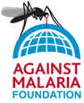
Since 2012 AMF has regularly been rated as a top charity by major independent charity evaluators including Give Well , Giving What We Can and and The Life You Can Save.
AMF funds bednets and ensures that they are distributed and used by those who are most vulnerable to malaria infection. Unlike traditional net distributors, AMF actively monitors bednet use to ensure the nets are used properly, including being placed where they need to be--over heads and over beds. Without proper monitoring, bednets distributed by traditional methods are often misused for a variety of other purposes. In 2014, AMF introduced smartphone technology to make monitoring even more cost-effective by reducing paperwork and streamlining tracking.
In August 2015 AMF was granted tax deductible status in Australia so this should be a complete no-brainer for Australian philanthropists.
Amnesty International
Amnesty is the world's preeminent human rights organization. It is dedicated to protecting the rights enshrined in the Universal Declaration of Human Rights.
It is “independent of
any
government, political ideology, economic interest
or religion, and is funded mainly by its membership and public
donations”
(Who
we
are).
We are proud to support their work.
Asylum Seeker Resource Centre
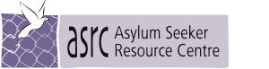
Whatever your views might be on the number of asylum seekers that we can or should accept, it is surely agreed that those that are here should be provided with the basics that they need in order to live with dignity during the process, as well as the support and information that will allow them to effectively present their case and receive a fair hearing.
That is what ASRC does and we are proud to support their work.
Australians Investing in Women
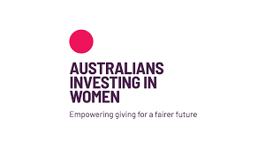
"Effective philanthropy understands the needs of women and men are different and that in order to treat them equally, their different circumstances must be addressed."
Why focus on investing in women and girls?
Quoting from the 2012 report The Best of Every Woman prepared by Effective Philanthropy for the AMP Foundation:
...investments in programs that help improve the health, education and wellbeing of women are often described as having a significant "multiplier effect" based on the cross-generational benefits that those investments support.
Studies have shown that where women have access to education they tend to:
- have fewer and healthier children, who are themselves more likely to go to school
- participate more in paid work, and
- invest a higher proportion of their earnings in their families and communities than their male counterparts.
The above effects tend to be magnified the higher the level of education obtained.
Australian Muslim Women's Centre for Human Rights
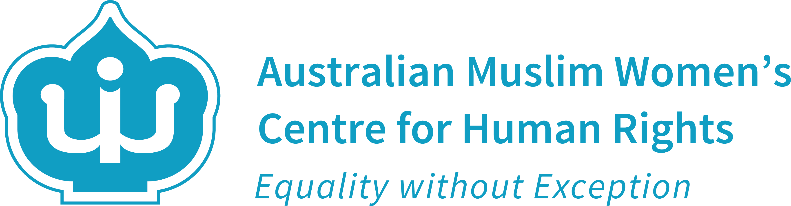
Through our support for refugee initiatives we have become aware of the special challenges facing some Muslim women in Australia. We were delighted to learn of AMCHR's work.
Quoting from their theory of change:
We take a non-religious, non-sectarian approach to our work. We resist versions of Islam used to justify any violations against women and use a social justice lens to push back against harmful narratives. We embrace the diversity of Muslims in Australia as a strength, ensuring our work is accessible and relevant to all Muslim women.
and
We prioritise a trauma-informed, client-centred and strengths-based approach to all of our services and programs, working with a focus on the benefits of supporting women to create practical changes in their lives. We advocate for access and fair treatment.
Centre for Policy Development
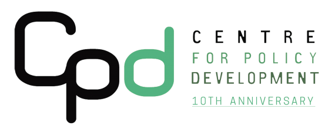
CPD is one of Australia’s leading independent policy institutes.
As a small philanthropic foundation we know that our funding for individual projects is necessarily limited. So we look for opportunities to provide startup funding in the early days of promising initiatives, in the hope that they will prove themselves and eventually be taken over by government or other organizations with deeper pockets.
However, we have learned that getting noticed, and making that transition from a proven idea to a mainstream practice, is difficult.
CPD's model is to "create, connect, and convince":
- We create ideas from rigorous, evidence-based, cross-disciplinary research at home and abroad.
- We connect experts and stakeholders to develop these ideas into practical policy proposals.
- We then work to convince governments, businesses and communities to implement these proposals.
We believe that independent, non-partisan policy research institutes like CPD play a vital role in identifying what works and what doesn't, and advocating to bring best practice into the mainstream.
Effective Altruism
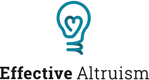
Effective Altruism Australia allows Australian donors to give to some of the world's most efficient charities.
Quoting from their website:
Effective Altruism Australia partners with charities evaluated to be implementing the most transparent, cost-effective, and evidence-based programs for saving and improving lives. Your donation will go directly to support their programs, thereby helping to end poverty as soon as possible.
Quoting from the Centre for Effective Altruism website:
Effective altruism is about using evidence and reason to figure out how to benefit others as much as possible, and taking action on that basis.
Fitzroy Stars
www.facebook.com/FitzroyStars/
(Funded through the Aborigines Advancement League)
The Fitzroy
Stars
are a predominantly Aboriginal football club based in Melbourne.
In 2008 revival of the club was kickstarted with support from Oxfam.
Quoting from the
Oxfam website:
“we support the Stars in their work to improve men's health,
increase
positive parenting and strengthen Koori community in
Melbourne.”
The benefits of this project are clearly visible. See, for example, this video and this video about the revival of the club in 2008. We are proud to support it financially. We have also become big fans of the football club.
Fred Hollows Foundation
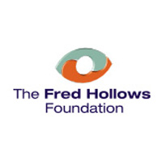
"Many people stay needlessly blind because they live in poverty. In developing countries, blindness denies people education, independence and the ability to work – things which can break the poverty cycle."
The World Bank has identified cataract surgery as among the most cost-effective of all public health interventions.
The Fred Hollows Foundation provides inexpensive cataract surgeries and other eye care services that have restored the sight of over a million poor people around the globe.
The Life You Can Save
Fred Hollows was an authentic Australian/New Zealand hero and his legacy continues, work that we are proud to support.
Girls at the Centre
Girls at the Centre is now part of the Girls Academy initiative - "Develop a Girl. Change a Community".
It is a program to help indigenous girls in years 7-9 stay at school.
The program is expensive if measured in terms of the cost per girl, but not if the cross generational benefits are taken into account. See the research quoted under Women Donors Network
We originally supported this wonderful program through Smith Family. We are delighted that it now has support from both federal and state governments and we are very proud to have played a part in getting it to this point.
Give Directly
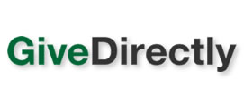
Give Directly passes your donation directly to the extreme poor using modern payments technology . This TED Talk given by one of the founders makes the case for this model.
Give Directly is consistently rated as one of the most effective charities by Give Well and The Life You Can Save.
Traditional NGOs are middlemen between the donor and the beneficiary. GiveDirectly has provided us with a proven model where the middleman can be cut out altogether for certain kinds of giving.
Middlemen need to justify their existence by the value they add. We believe that all the NGOs we support add significant value which outweighs the cost of using them. However we also believe that GiveDirectly is an important innovation and should now form part of everyone's giving portfolio.
Hands On Learning
Hands on Learning “helps
secondary
schools deliver an in-school program for students most at risk of
leaving
school early”.
The HOL method has evolved from many years of practical experience. The evidence for its effectiveness is compelling. See for example, Positive, Practical and Productive: A Case study of HANDS ON LEARNING in action by Dr Malcolm Turnbull of the University of Melbourne's Youth Research Centre, May 2013.
Apart from the transforming effect HOL can have on the lives of the children it helps, the economic benefit to society is huge. Deloitte Access Economics published a study in September 2012 estimating that “in workforce outcomes alone, Hands On Learning has already contributed gains of $1.6 Billion to the Australian economy”.
This is a game changing initiative that we are proud to support in the hope that it will eventually be adopted by Government.
International Anti-Poaching Foundation
Wildlife poaching, particularly for ivory, has reached a crisis level driven by misguided, newly wealthy buyers who have driven prices in this illegal trade to unprecedented levels.
Rangers attempting to protect the wildlife now find themselves risking their very lives in an all out war with ruthless, well funded and heavily armed criminal organizations. They and the wildlife they protect urgently need our assistance.
Jawun & Empowered Communities
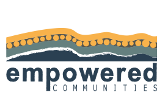
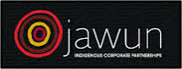
jawun.org.au empoweredcommunities.org.au
We came to Jawun through the Empowered Communities initiative which is described in this report submitted to the Australian Government in March 2015. The report opens with
There needs to be a fundamental shift away from the traditional social policy framework in which Indigenous affairs has been conducted
Later it quotes from the final report of the Royal Commission into Aboriginal Deaths in Custody, published over 25 years ago. In that report the commissioner, Elliot Johnston QC, stated that
prerequisite to the empowerment of Aboriginal people and their communities is having in place an established method, a procedure whereby the broader society can supply the assistance referred to and the Aboriginal society can receive it whilst at the same time maintaining its independent status and without a welfare-dependent position being established as between the two groups
Jawun describes itself as
a place where corporate, government and philanthropic organisations come together with Indigenous people to effect real change
We believe that Empowered Communities have got the policy right and we are proud to support it through Jawun.
Just Reinvest
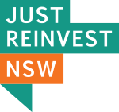
JustReinvest stands for justice reinvestment - "In Australia the prison system costs taxpayers $3.7 billion a year. We cannot afford to continue down this path. There’s a better way to invest our resources."
Moreover, this is a major gap between indigenous and non indigenous Australians -
Indigenous people only make up 2.5% of Australia’s population but figures now show 26% of adult males in prison are Indigenous, 31% of adult females in prison are Indigenous and 49% of young people in juvenile detention are Indigenous.
There is a clear moral obligation to close this gap, but it also makes good financial sense -
A recent study by Deloitte Access Economics found that $111,000 can be saved per year per offender by diverting non-violent Indigenous offenders with substance use problems into treatment instead of prison. A further $92,000 per offender in the long term could be saved due to lower mortality and better health related quality of life outcomes.
The first Australian justice reinvestment trial started in Bourke in 2013 culminating in a KPMG report to be delivered to the NSW government in July 2016.
The implementation phase, which we are proud to support, will take place from 2016 to 2019 during which time "economic modeling will be undertaken to demonstrate the savings associated with the strategies to be identified by the community and local service providers to reduce offending amongst children and young people". We hope that this will lead to justice reinvestment being rolled out around the country.
Médecins Sans Frontières (Doctors Without Borders)
MSF “delivers emergency aid
to people
affected by armed conflict,
epidemics, natural disasters and exclusion from healthcare”
(About
MSF).
The “doctors, nurses,
midwives,
surgeons, anaesthetists, epidemiologists,
psychiatrists, psychologists, pharmacists, laboratory technicians,
logistics
experts, water and sanitation engineers, administrators and other
support
staff”
who deliver this aid, often young volunteers,
can find themselves working in highly dangerous environments at
great
personal risk.
1n 1999 MSF was awarded the Nobel Peace Prize for its work. We are proud to support this inspirational organization.
Melbourne Accelerator Program
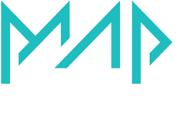
themap.co/community/social-impact
MAP is Melbourne University's startup accelerator. In 2015 it was ranked in the world's top 10. We support the social impact stream.
Social Impact at MAP
Incredible potential lies at the intersection of technology, social impact and business. This is where some of the great social problems of our time can be solved.
We share that belief and are proud to support this new social impact initiative.
Murdoch Childrens Research Institute
One of the stated goals of MCRI is “to be
one of the
top five child health research institutes in the world”
(Vision
& Mission).
They are in an ideal environment to achieve that goal, located in
the exceptional new premises of
The
Royal
Children's Hospital in Melbourne, Australia — a building
specifically designed to promote synergies between
research and clinical groups.
Quoting from their website:
Researchers at the Institute work side-by-side with doctors and nurses from our campus partners The Royal Children's Hospital and the University of Melbourne’s Department of Paediatrics. This provides our researchers with much greater interaction with patients for research and gives us the ability to more quickly translate research discoveries into practical treatments for children.
We are excited about the potential of this unusual facility, which we believe history may ultimately judge to be one of the most important of Dame Elisabeth Murdoch’s many fine legacies.
Projects
- Developing First 1000 Days program and strategy in the context of the data gathered through the Generation Victoria initiative.
- World Scabies Program
NetHope
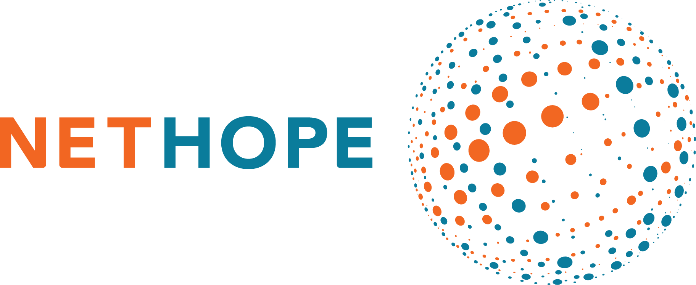
Changing the world through the power of technology and collaboration.
NetHope joins the world’s largest nonprofits with technology innovators worldwide.
We first became aware of Nethope through this work bringing connectivity and communications to refugee communities.
Communications are critical to help refugees find assistance, connect with loved ones, and stay abreast of news updates. While many Syrian refugees are fortunate to have a mobile phone, technical infrastructure is lacking. As a result, refugees do not have access at the very time when it is most urgently needed to navigate the long and perilous journey to safety.
Their work is essential to many of the other causes we support.
One Disease at a Time
The vision of One Disease at a Time is
“to systematically target and eliminate one disease at a time”
,
starting
with scabies, a
“highly contagious skin disease, which has reached epidemic
proportions in
many remote Aboriginal communities”
.
Scabies can be devastating for the individual as well as whole communities. Yet it is virtually unknown in non indigenous communities. It is one more gap that needs to be closed.
One Disease is run by a talented and creative team, chasing ambitious goals and achieving encouraging results. We are proud to support them.
Oxfam
From the Oxfam website:
“As well as becoming a world leader in the delivery of emergency
relief,
Oxfam International implements long-term development programs in
vulnerable communities. We are also part of a global movement,
campaigning with others, for instance, to end unfair trade
rules, demand
better health and education services for all, and to combat
climate
change.”
Oxfam's byline is
“Working for a future free from poverty”
.
That is work which we are proud to support.
Pathway Club
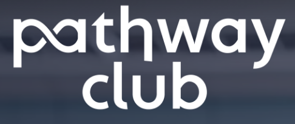
A revolving fund to support displaced people with international job offers
Pathway Club provides displaced people with financial support to help them take advantage of international career opportunities as a pathway toward security and self-sufficiency.
Peru's Challenge
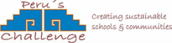
Peru is a magical country but with a history of political unrest and internal conflict. Despite significant progress in recent years, becoming one of the world's fastest growing economies, serious challenges remain. Quoting from the Peru's Challenge's website:
- 'Peru remains affected by high levels of inequality and social exclusion' (Save the Children April 2013)
- '34.8% of the population lives below the poverty line. In rural areas, over 60% of the population is poor, nearly three times higher than rates in urban areas (21.1%).' (Save the Children April 2013)
- In 2006, 54% of the population were living below the national extreme poverty line, 63% of which are children and adolescents. Of these, 4.7 million were unable to meet basic nutritional needs.
- There are 3.3 million child workers; 33% under 12 years old, 141 000 children working in the street, 2.3 million doing dangerous work. (According to the International Labour Organization (ILO) and the National Institute of Statistics and Informatics (INEI) and Save the Children April 2013).
We want to help Peru continue the great progress they have already made.
Red Cross Red Crescent
Red Cross is the iconic crisis relief agency. It also mobilizes literally millions of volunteers around the world.
Quoting from their Australian website:
Relief in times of crisis, care when it's needed most and commitment when others turn away. Red Cross is there for people in need, no matter who you are, no matter where you live.
Red Cross is an extraordinary organization that we will probably always support.
Refugee Career Jumpstart Project
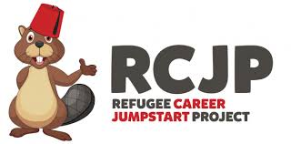
The Refugee Career Jumpstart Project focuses on bridging the gap between refugee arrival and employment in Canada.
Jumpstart is the brainchild of three close friends, all Syrian-Canadians who wanted to help their fellow Syrians when they began arriving by the hundreds in December of 2015.
Like Refugee Talent in Australia, this Canadian initiative helps newly arrived refugees get into the job market in their new country.
Jumpstart links into the global Talent Beyond Boundaries initiative.
Refugee Legal Support
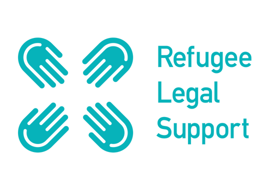
Refugee Legal Support provides free asylum and family reunification assistance to refugees currently stranded in Greece.
Quoting from their website...
Refugees are denied access to justice due to severe administrative, legislative, practical obstacles, insufficient information and misinformation, and a lack of legal assistance. They are trapped in Greece, living lives in limbo.
In our experience, asylum claims are often won or lost at the initial stages where the quality of a witness statement or an understanding of the necessary evidence can make a difference between grant and refusal of refugee status. Without legal assistance, it is extremely difficult to navigate the legal maze allowing refugees to apply to be reunited with family members elsewhere in the EU.
The situation for many refugees in Greece is grave. Refugee Legal Support empowers them to exercise their rights within the EU as a means of improving their situation. The work is carried out by a small local team in Greece supplemented by volunteer lawyers from the UK who take time from their demanding jobs to travel to Greece and work pro bono. We are proud to support them.
Refugee Talent
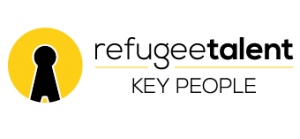
Solving the problem of refugees struggling to get their first local work experience.
Nirary Dacho is an experienced computer programmer and former University lecturer in Syria. He arrived in Australia in 2015 as a refugee but found that none of the existing channels for finding a job worked for him. So he decided to use his technical skills to create his own - Refugee Talent. He and business partner, Anna Robson, have turned Refugee Talent into the most effective and innovative job placement service for refugees in Australia.
This is a story of private enterprise, entrepreneurship and passion. We are proud to be associated with it.
Refugee Talent links into the global Talent Beyond Boundaries initiative.
Refuge Point
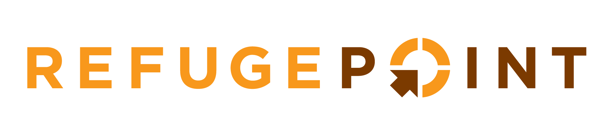
RefugePoint advances lasting solutions for at-risk refugees and supports the humanitarian community to do the same.
From the RefugePoint website:
Instead of asking, “how can we feed and shelter more refugees longer?” RefugePoint asks, “what are the long-term solutions that will enable refugees to lead healthy, dignified lives and become contributing members of society again?” Those are the solutions that RefugePoint works to expand through our three tactics: direct services, field building, and systems change.
Our support to RefugePoint is to link them to the systems changing work pioneered by Talent Beyond Boundaries which empowers refugees to use their skills to get themselves out into new lives. Our initial focus is on RefugePoint's work in Kenya.
Regional Australia Institute
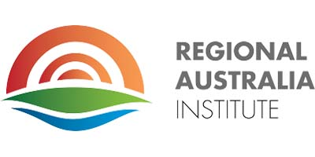
Regional Australia accounts for one third of our national output but many regional employers struggle to meet labour gaps.
Quoting from the acknowledgement to Regional Australia Institute's Steps to Settlement Success:
Regional Australia Institute (RAI) has been a tireless advocator for practical solutions to population and labour challenges, particularly in rural Australia.
RAI does vital research which is important to rural Australia and therefore to the whole Australian economy. It is also important to the success of Australia's migration program, including humanitarian refugee resettlement and the skilled refugee international recruitment model being pioneered by Talent Beyond Boundaries.
Rotary Peru

Following on from the Peru's Challenge project we continue our support in Peru with this Rotary project which "establishes community based health services for people who live in isolated regions in the Andes Mountains near Cusco". The project is also supported by the local Rotary Club in Cusco, Peru.
The Salvation Army
We normally do not support overtly religious charities but The Salvation Army is an exception. They seem to do things that nobody else does and to be there when nobody else is. We respect the work that they do greatly and we are proud to support them.
Save the Children
Children clearly have special needs. The founder of Save the Children, Eglantyne Jebb, believed that they should therefore have special rights which she described in 1923 in the Declaration of the Rights of the Child. Those rights evolved over the years, eventually becoming international law in 1990 as the Convention on the Rights of the Child.
Those rights are still at the heart of Save The Children’s work today. We are proud to support that work.
Scottish Love in Action
We have a family connection with the founder of SLA, Gillie Davidson. There are many worthy charities working in India, but we have close personal knowledge of the passion and dedication of Gillie and SLA.
SLA works with vulnerable children in the Indian state of Andhra Pradesh. Some of these children are Dalits - formerly known as “untouchables”. SLA funds a school and home for these children, using education as a means of breaking the cycle of poverty and discrimination.
This video is an inspiring introduction to their work.
Second Bite

Wasting food when others are going hungry is simply wrong if it can be avoided.
Second Bite works with suppliers and teams of volunteers to "redistribute surplus fresh food to community food programs around Australia".
Obviously this is a good idea - the trick is making it work, and that is exactly what Second Bite has done - with extraordinary success. We are very proud to support them.
SEW
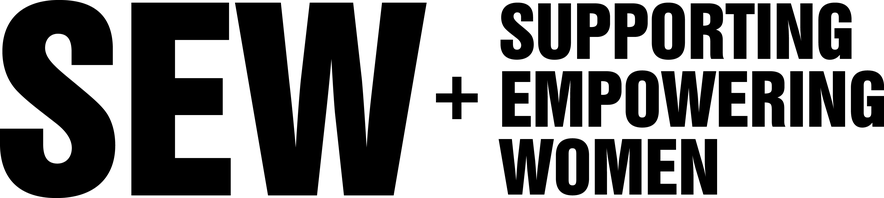
SEW is a social enterprise that employs HIV+ women in Arusha, Tanzania. SEW seeks to end the stigma associated with HIV by demonstrating that HIV+ women are resilient, industrious and capable.
Sikhala Sonke
www.facebook.com/Sikhala-Sonke-405216026521011
Sikhala Sonke, which means "We Cry Together" is a womens organization located in Nkaneng, South Africa - a shanty town near the Lonmin mine, site of the infamous 2012 Marikana Massacre when 37 striking mineworkers were killed by police. The living conditions that motivated the strike in the first place continue to worsen.
Following a visit to their community last year, arranged by the local Amnesty International, we have provided seed funding to allow the women to set up a poultry farming social enterprise.
The Smith Family
“The Smith Family believes that education is the key to changing
lives.”
Many would share that view.
What is unusual about The Smith Family is the way they work.
Quoting again from their website:
“Our support is holistic, ongoing and long term.”
They can provide children with support
“from pre-school and primary school,
to senior school and on to tertiary studies if they choose.”
This is the sort of long term commitment that
children might normally expect to receive from their own family.
However not all children are that fortunate — they may find
themselves
“growing up in lone parent and jobless households”
.
The Smith Family helps fill the gap - not just for a difficult year
or two
— but over a child's whole journey through the education system.
The Smith Family is indeed “everyone's family”. We believe that they are a very special and quite unique organization and we are proud to support them.
Tertiary Scholarships
The cost of supporting a student increases as they progress through secondary school and on to tertiary. For example, the cost of sponsoring a Smith Family tertiary student is almost three times the cost of sponsoring a primary school student.
So a student can reach tertiary after years of hard work, only to find that there is no more support available. Often this is the most important part of their journey where they get the formal training and qualifications which will allow them to finally break free from their disadvantaged circumstances.
Some progress has been made towards filling this critical funding shortfall, but it is not enough. That is why we have targeted a portion of our Smith Family support towards tertiary sponsorships and committed to a 5 year moving window ensuring that when we start supporting a student they can be confident of being funded through to completion.
Social Ventures Australia
SVA Bright Spots Schools Connection
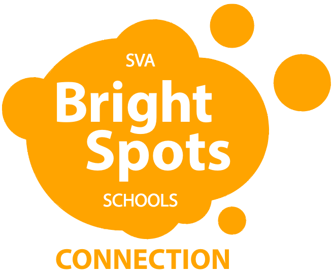
www.socialventures.com.au/work/sva-bright-spots-schools-connection
"The Connection supports exceptional school leaders in disadvantaged schools to improve the outcomes of their students"
The Connection is committed to sharing and spreading effective practices across Australian schools that will drive high quality learning in some of the most challenged school communities in Australia.
This support for exceptional teachers complements our support for disadvantaged students through Smith Family and disengaged students through Hands On Learning.
Aspire Social Impact Bond
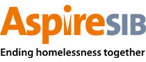
www.socialventures.com.au/work/aspire-sib
Australia’s first homelessness focused social impact bond.
Newpin Qld Social Benefit Bond
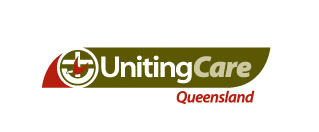
www.socialventures.com.au/work/newpin-qld-sbb
Based on the successful NSW Newpin model, this is Queenslands first social impact bond. It works primarily with First Australian families.
It is estimated that around two and half times more children will be reunited with their families than would occur in the absence of the Newpin Program.
Resolve Social Benefit Bond
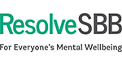
www.socialventures.com.au/work/resolve-sbb
Australia’s first social impact investment aimed at improving mental health outcomes.
Sticking Together Social Impact Bond
www.socialventures.com.au/work/sticking-together-social-impact-bond
Australia’s first social impact bond addressing youth employment.
Stateless Children Legal Clinic
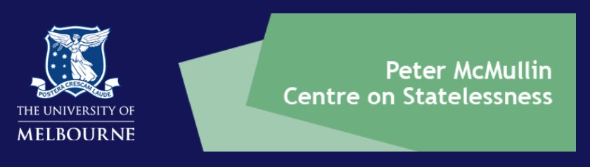
This grant is made in honour of Hiam Chalouhy
The SCLC is the first stateless legal clinic of its kind in Australia, and the third of its kind globally. With all the problems in the world today, the self inflicted bureaucratic nonsense that is statelessness is surely a problem that we can solve. It certainly has no place in modern Australia.
The grant has been named in honor of Hiam Chalouhy, the mother of stateless person Fadi Chalouhy, who now resides in Australia. Mr Chalouhy is the first stateless person to be granted an Australian skilled migrant visa through the Talent Beyond Boundaries program and works closely with the SCLC to oversee and support its development and operation.
Here is a video which includes an eloquent and moving 6 minute speech by Fadi starting at 2 minutes 44 seconds where he recounts his personal experience of being stateless.
Talent Beyond Boundaries
www.talentbeyondboundaries.org
Linking the global labor market to a new talent pool.
TBB works in refugee communities in Lebanon and Jordan gathering their skills, qualifications and experience. This data is then made available in anonymous form to potential employers around the world. When an employer expresses interest in a candidate's skills TBB assists the candidate through a remote recruitment process including interviews and supervised skills validation. In event that an employer offers a job to a candidate, TBB assists the candidate and employer with the required visa applications and migration and settlement process.
The refugee crisis has reached something of a stalemate. Political solutions seem to have gone as far as they can because governments can't get the popular mandate they need to do more. This ground breaking initiative opens up a brand new additional pathway out for refugees. It empowers the private sector around the world to make a difference - effectively plucking skilled refugees out of their current hopeless situation, where their skills are going to waste.
TBB leverages existing domestic refugee employment initiatives around the world, such as Refugee Talent in Australia, Refugee Career Jumpstart in Canada, Breaking Barriers in the UK, by sharing its international refugee skills data with them so that it can be viewed by potential employers around the world.
Government pilots
- Australia: The Australian Skilled Refugee Labour Agreement Pilot
- Canada: Economic Mobility Pathways Pilot
- UK: Displaced Talent Mobility Pilot
Thrive
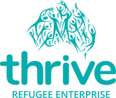
thriverefugeeenterprise.org.au
Business loans for refugees that restart lives.
In the best of circumstances, it is a major challenge moving country and establishing a new life and career. It is even more challenging as a refugee. Finding a job is difficult without local references or qualifications. Getting a loan to start a business is difficult without any local credit history. Thrive provides microfinance loans and mentoring to refugees starting their own businesses.
Through Thrive and Refugee Talent we hope to support refugees to become financially independent, productive members of our community. That is a win win for both the individuals concerned and for Australia.
UNHCR
"UNHCR is dedicated to saving lives, protecting rights and building a better future for refugees, forcibly displaced communities and stateless people."
- We are now witnessing the highest levels of displacement on record.
- An unprecedented 65.6 million people around the world have been forced from home. Among them are nearly 22.5 million refugees, over half of whom are under the age of 18.
- There are also 10 million stateless people who have been denied a nationality and access to basic rights such as education, healthcare, employment and freedom of movement.
- 20 people are forcibly displaced every minute as a result of conflict or persecution.
Support of UNHCR is essential.
Unicef
Like the United Nations itself, Unicef is sometimes criticized for being too large and bureaucratic. However, we had the privilege of visiting Mozambique with Unicef a few years ago and were enormously impressed by the knowledge, experience and commitment of the people working there. It is likely that Unicef will always feature in our annual giving.
University of Melbourne
Living in Melbourne, Australia we have personal connections with the University of Melbourne and usually donate to it in some form each year.
World Vision
World Vision is a very worthy organization that we used to support. However, in recent years we have shifted our giving to others who do similar work but who are not linked to any religious group.
ygap
Supports local leaders with solutions to local problems.
ygap believes in empowering communities:
Rather than imposing our perceived solutions on a foreign community, we support the local leaders who live there and have developed their own ... We believe this is the most effective, sustainable means of tackling poverty because these local leaders understand the unique challenges of their communities. Our role is to help refine and scale their solutions.
This mirrors, internationally, the Empowered Communities approach in indigenous affairs here in Australia. We believe that this approach makes sense for any disadvantaged community wherever it may be located.